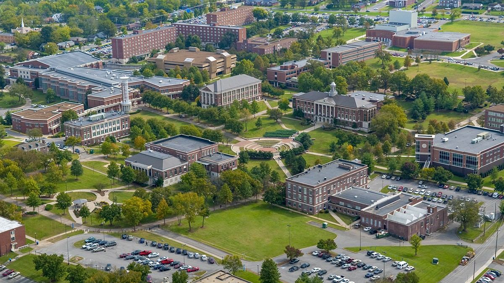

Education
I am a dedicated and passionate student at Tennessee State University, pursuing a Bachelor of Science in Computer Science/Data Science with a Business Minor, set to graduate in April 2026. My academic journey is marked by a perfect 4.0 GPA and consistent recognition on the President's List.
My involvement extends beyond the classroom as an active member of the TSU National Society of Black Engineers (NSBE) and the Association for Computing Machinery (ACM). Through NSBE, I collaborate on innovative tech initiatives and contribute to fostering diversity and excellence in the engineering community. With ACM, I stay at the forefront of cutting-edge technologies, participate in coding competitions, and connect with industry leaders shaping the future of computing.
As a distinguished member of the University Honors College, I thrive in an intellectually stimulating environment, engaging in specialized coursework and pushing the boundaries of knowledge through collaborative research projects. My commitment to academic excellence is further recognized through my membership in the Alpha Lambda Delta Honors Society, where I join a community of scholars dedicated to continuous learning and personal and professional growth.
I am honored to be a recipient of scholarships from Phi Beta Sigma, Cigna, and TSU, which have supported my educational journey. My goal is to leverage my knowledge and skills to make a meaningful impact in the field of computer science and data science.